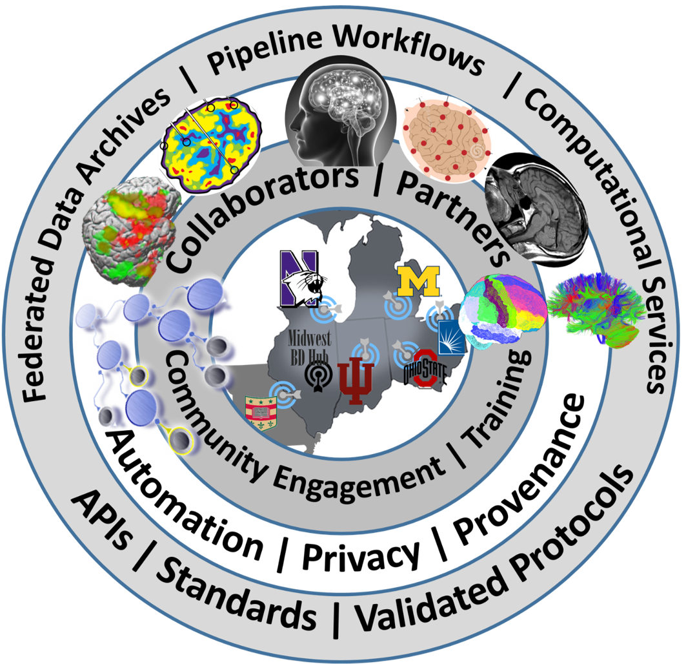

The Advanced Computational Neuroscience Network ACNN aims to build broad
consensus on the core requirements, infrastructure, and components needed to
develop a new generation of sustainable interdisciplinary Neuroscience Big Data
research. As a network, ACNN leverages community strengths and resources to
drive innovation and collaboration for the understanding of the structure,
physiology, and function of the human brain through partnerships and services
in education, tools, and best practices. Six major universities in the Midwest
(Michigan, Ohio, Indiana, Case Western, Northwestern and Washington U, St. Louis)
coordinate the ACNN research, development, training, and dissemination activities.
Over 25 other universities, industry partners, neuroscience research centers and
hospitals collaborator with ACNN investigators on a wire range or basic science,
modeling, analytics and applied neuroscience research.
www.NeuroscienceNetwork.org

A Midwest Advanced Computational Neuroscience Network (ACNN) Spoke
www.NeuroscienceNetwork.org
2016 ACNN Midwest Workshop on Big Neuroscience Data, Tools, Protocols & Services
September 20-21, 2016, University of Michigan, Ann Arbor, Michigan, USA
